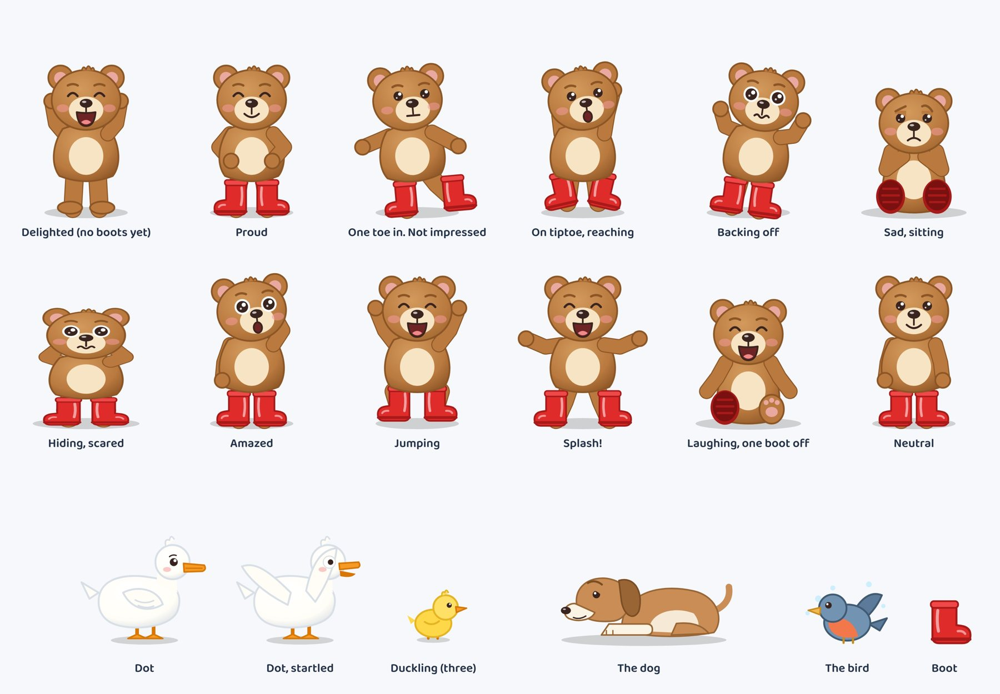
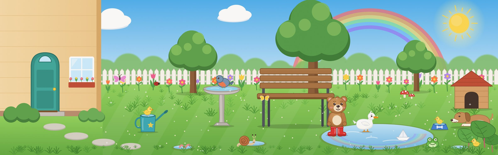

Moss and the Biggest Puddle
Art brief for a 12-page picture book, ages 4 to 5, in soft watercolour. It is read in an app where the camera moves around each picture, so a few layout rules matter more than usual.
What is needed
| Piece | How many | Size in pixels | Shape |
|---|---|---|---|
| Story pages | 11 | 3200 x 2000 | Landscape, 16:10 |
| Whole-garden scene (page 12) | 1 | 6400 x 2000 or bigger | Very wide, 3.2:1 |
| Cover | 1 | 1600 x 2400 | Portrait, 2:3 |
| Character sheet | 1 | Any | For reference, not shown in the book |
The story: Moss the bear cub has new red boots and no puddle to jump in. Moss tries three puddles that are wrong (too small, too high, not mine), gives up, sits out a thunderstorm under a bench with a duck called Dot, and comes out to find the biggest puddle in the world. The last page is the whole garden, where the child hunts for Dot's three lost ducklings.
The pictures in this brief are flat placeholder drawings from the working prototype. Use them for layout only: who is where, how big, what is in the frame. The finish, line and colour should follow the style section, not the placeholders.
How the app shows a picture
A page opens whole. Then, on each tap, the camera moves in to a close-up of one part of the picture, and the words for that part appear underneath. A page has two or three of these stops. Some stops glide slowly from one spot to another, for example from Moss up to the sun.
What that means for the artwork:
- Each stop has to work as a small picture by itself. A stop is often only a quarter of the page, shown full screen on a tablet, so faces and hands need to hold up at that size.
- Leave air around each stop. Phones are long and thin, tablets are nearly square, so the app shows a bit more than the box on one side or the other. Don't crowd a stop with something that belongs to another moment.
- Keep the boxed things roughly where they are. The red boxes on the roughs are the camera stops. If something in a box moves a little, that's fine and I'll adjust the stop. If the layout changes a lot, say so and I'll re-mark the page.
- No words in the pictures. The app adds all the text, including "SPLASH!" and "BOOM!".
- Paint right to the edges. No white border or torn-paper edge. The camera goes into the corners.
- Keep faces and anything the story names at least 8% in from every edge.
Camera stop, numbered in reading order Where a gliding stop ends Thing to find (page 12 only)
Style: soft watercolour
Think of a picture book you'd read at bedtime: quiet, warm, a bit loose. The opposite of the bright flat placeholders.
- Paint. Real watercolour, or digital that would fool someone. Wet washes for sky, grass and the puddle, with blooms and soft edges left in. Tighter, drier brushwork on faces, paws and the boots.
- Paper. Cold-press texture visible throughout. Highlights are bare paper, not white paint.
- Line. Thin sepia or soft pencil, broken in places. No heavy black outline and no outline at all on distant things.
- Depth. Background paler and looser than the characters, so close-ups read clearly. Hills and far trees can be little more than a wash.
- Colour. A small, gentle palette. The boots are the strongest colour on every page; nothing else gets that red, so the eye always finds Moss.
- Mood. Kind. Even the storm page is exciting, not scary: no dark faces, no sharp shapes apart from the one lightning bolt.
- Avoid. Vector flatness, airbrushed gradients, 3D or plastic shine, photo textures, heavy outlines, huge glossy cartoon eyes.
The colours are starting points. Watercolour will shift them and that's fine, as long as the boots stay clearly red and Moss stays the same brown from page to page.
Characters

Moss
- A bear cub who feels about four years old. Round body, short arms and legs, head about 40% of total height.
- Honey-brown fur, cream muzzle and tummy patch, small round ears with pink insides, a little tuft on top of the head.
- Small dark eyes with one highlight, eyebrows that do a lot of the acting, rosy cheeks.
- No clothes, only the boots. Moss is never called he or she in the text, so nothing that signals either.
- The boots: red wellingtons, shiny, a little too big, with a paler band round the top and ridged dark-red soles. Barefoot on page 1. One boot off on page 11.
- Size: standing, Moss comes up to the seat of the garden bench and can't reach the top of the bird bath.
Dot
- A white duck, grown up, about half Moss's height. Orange beak and feet, a small tuft on her head.
- Calm and a little bossy. Scared of thunder, which is how the two meet.
- White on a pale page is tricky: give her warm grey shadows and keep a darker wash behind her.
Everyone else
- Three ducklings. Yellow, fluffy, identical, about a fifth of Dot's size. Page 12 only.
- The dog. Tan and cream, long body, floppy darker ears. Lying down in every picture, sleepy, one eye open over the bowl. Never growling or showing teeth.
- The bird. Small, blue-grey with an orange breast. Lives in the bird bath.
- Page 12 extras. Snail, frog, worm, butterfly, ladybird, a paper boat, two red-and-white mushrooms.
The garden
The whole book happens in one back garden, and the last page shows all of it. Things must stay in the same places on every page, because children will go back and check.

From left to right:
- The house. Cream wall, teal back door with a round top, one window with a flower box, a step, two low bushes, stepping stones across the lawn.
- The watering can. Teal with a yellow star. It drips.
- A small tree, then the bird bath. Pale stone, taller than Moss.
- The bench under the big tree. Wooden slats, dark metal legs, room underneath for a bear cub and a duck.
- The dip in the lawn in front of and to the right of the bench. Dry grass before the storm, the big puddle after it.
- A second small tree, then the kennel. Wooden, red roof. The dog's blue bowl with a bone on it sits in front, and big leaves grow in the bottom right corner.
Along the back runs a white picket fence with flowers in front of it, and soft rounded hills behind.
Weather and light
| Pages | Weather | How it looks |
|---|---|---|
| 1 to 5 | Sunny and dry | Clear pale-blue wash, warm light, short shadows. The lawn looks dry. |
| 6 | Turning | Still bright on the left. Grey clouds moving in from the right, sun half covered. |
| 7 | Storm | Grey sky, slanting rain, one lightning bolt, colours muted to grey-green. Rain rings on the grass. |
| 8, 9, 10, 12 | Fresh after rain | Sun back, rainbow, cleaner and brighter colours than the morning, small sparkles of light on wet things. The big puddle reflects the sky. |
| 11 | Evening | Peach and gold sky, low sun, long soft shadows, the puddle gone warm orange. |
Sizes and files
- Story pages: 3200 x 2000 pixels. If painting on paper, A3 landscape scanned at 300 dpi is more than enough; crop to 16:10.
- Page 12: at least 6400 x 2000. Children zoom into this one, so bigger is better, up to 12800 x 4000. On paper, two A2 sheets side by side or one long strip.
- Cover: 1600 x 2400. Leave the top third calm (sky) for the title. No lettering in the painting.
- Format: PNG, or JPEG at high quality. sRGB colour. No signature or page number inside the picture.
- Nice to have: characters on a separate layer from the background (or painted on a separate sheet). It isn't needed now, but it would let the app move them later.
Page by page
For each page: the words the app shows at each camera stop, what the picture needs, and a prompt to paste into an image tool if you go that way. An illustrator can ignore the prompts.
If you use an image tool
It can work, but two things are hard for these tools and both matter here: keeping a character identical across twelve pictures, and making one very wide picture. This order gives the best odds.
- Make the character sheet first. Use the prompt below. Keep trying until Moss looks right, because every later picture copies this one.
- Make page 2 next. It's the widest view of the garden. Attach the character sheet as a reference image.
- Then the other pages, each time attaching both the character sheet and page 2, so Moss and the garden stay the same. Use a tool that accepts reference images; without that, Moss will drift.
- Page 12 last. Most tools won't make a 3.2:1 picture in one go. Make the middle third first, then extend it left and right (often called outpainting or expand), or make three overlapping pictures and I'll join them. If this page is going to be commissioned from a person, it's the one to pick.
- Make them big. Most tools give about 2000 pixels across. Run the tool's upscaler to reach the sizes above, or send what you have and I'll tell you if it's too soft.
Check each picture before keeping it
- Two boots, both red, on the right pages. Barefoot on page 1, one boot off on page 11.
- Moss has no clothes, scarf, hat or bow. Same brown, same face.
- Dot is white with an orange beak. Exactly three ducklings on page 12.
- Right weather for the page, and no rainbow before page 8.
- No stray letters, signatures or frames. Right number of paws and legs.
- Things in the garden are on the correct side: house left, kennel right.
Rights. The book will be sold, so check that the tool's terms allow commercial use of what it makes on your plan. If you commission an illustrator in South Africa, get the copyright assigned to you, or a licence covering the app, in a signed written agreement. Paying for the work doesn't transfer it by default for illustrations. This is my understanding of the Copyright Act, not legal advice.
Sending pictures back
- Name them
page1topage12,coverandcharacters. Any names will do if that's a nuisance, as long as I can tell which is which. - Send the full-size files, not screenshots or pictures pasted into a chat app, which shrink them. A Google Drive folder works, or upload them to the project on GitHub.
- Send the character sheet and one finished page first. It's cheaper to change direction after two pictures than after thirteen.
Once they arrive I drop them into the book, check every camera stop against the new artwork, move any that no longer fit, and put the updated book in the playground for you to read through.